-
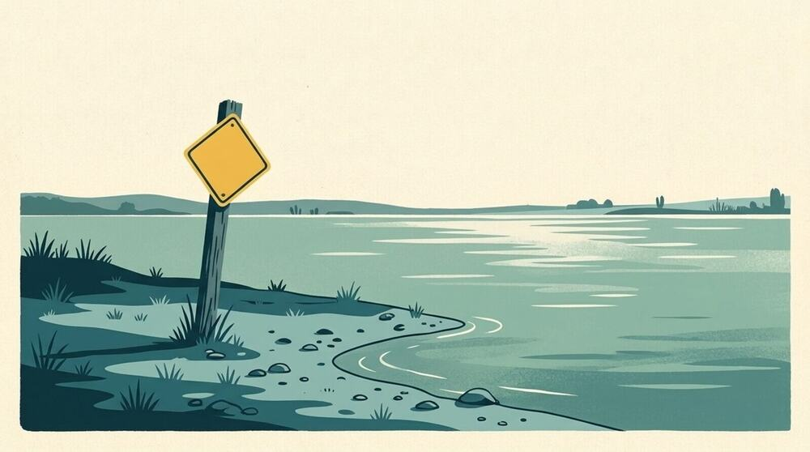
Cianobatteri nei laghi: le raccomandazioni del Cantone di Vaud
Che aspetto ha una fioritura di cianobatteri, gli effetti su persone e cani e i consigli del Cantone di Vaud: evitare l’acqua, fare la doccia, tenere gli animali fuori dal lago.
Leggi l’articolo → -
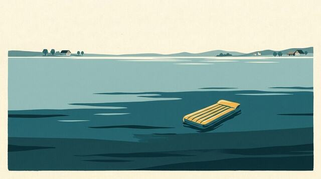
Materassini e galleggianti in acqua profonda: perché la SSS li sconsiglia
Massima 5 della Società Svizzera di Salvataggio: niente materassini né ausili al nuoto in acqua profonda. Deriva, buchi e l’alternativa: il giubbotto di salvataggio.
-
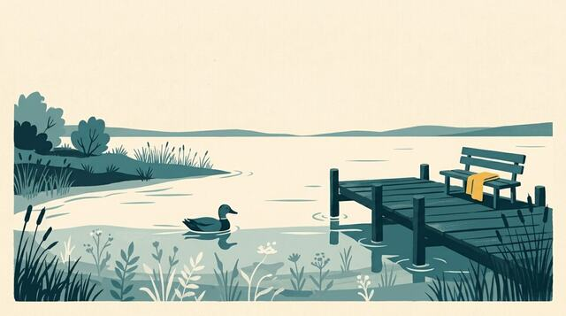
Pulci d’anatra: la dermatite del bagnante, cosa fare e come evitarla
Cosa sono le pulci d’anatra (cercarie), i sintomi, cosa aiuta e come ridurre il rischio, secondo l’Ufficio federale della sanità pubblica e il Cantone di Ginevra.
-
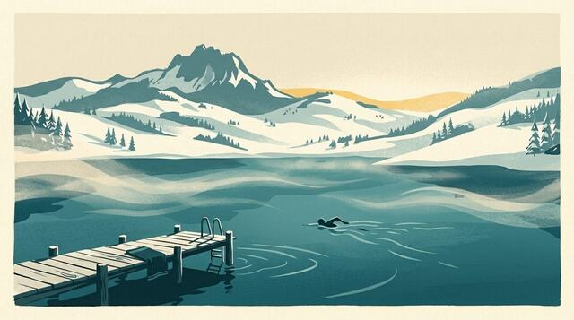
Bagno invernale nel lago della Gruyère: la temperatura dell’acqua da dicembre a marzo
Temperatura media dell’acqua del lago della Gruyère da dicembre a marzo (Alplakes, 2023–2025), le saune sul lago e le regole di prudenza del bagno freddo.
-
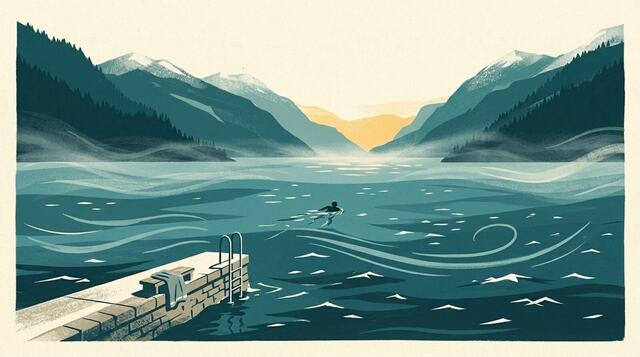
Bagno invernale nel lago di Lugano: la temperatura dell’acqua da dicembre a marzo
Temperatura media dell’acqua del lago di Lugano da dicembre a marzo (Alplakes, 2023–2025), le saune sul lago e le regole di prudenza del bagno freddo.
-
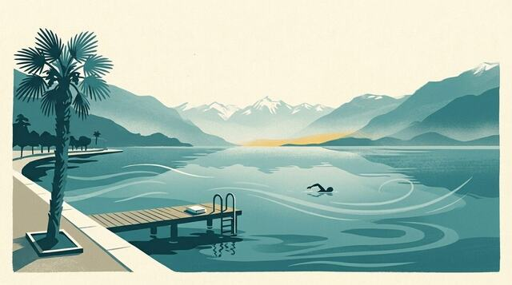
Bagno invernale nel lago Maggiore: la temperatura dell’acqua da dicembre a marzo
Temperatura media dell’acqua del lago Maggiore da dicembre a marzo (Alplakes, 2023–2025), le saune sul lago e le regole di prudenza del bagno freddo.
-
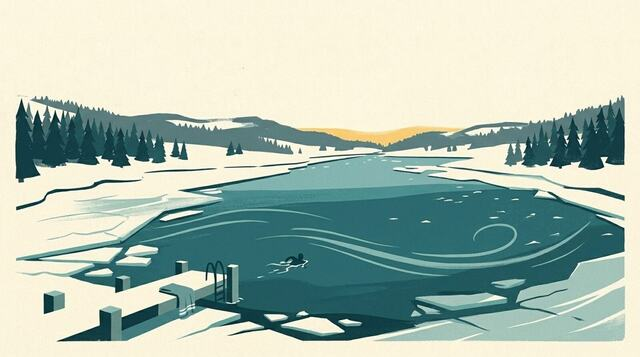
Bagno invernale nel Lac de Joux: la temperatura dell’acqua da dicembre a marzo
Temperatura media dell’acqua del Lac de Joux da dicembre a marzo (Alplakes, 2023–2025), le saune sul lago e le regole di prudenza del bagno freddo.
-
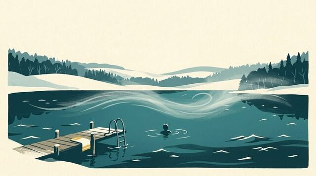
Bagno invernale nel Lac de Bret: la temperatura dell’acqua da dicembre a marzo
Temperatura media dell’acqua del Lac de Bret da dicembre a marzo (Alplakes, 2023–2025), le saune sul lago e le regole di prudenza del bagno freddo.
-
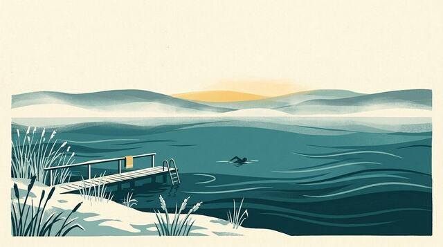
Bagno invernale nel Greifensee: la temperatura dell’acqua da dicembre a marzo
Temperatura media dell’acqua del Greifensee da dicembre a marzo (Alplakes, 2023–2025), le saune sul lago e le regole di prudenza del bagno freddo.
-
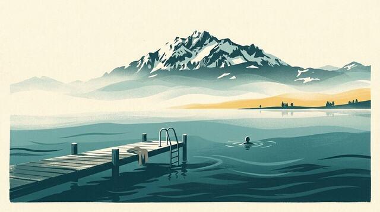
Bagno invernale nel lago dei Quattro Cantoni: la temperatura dell’acqua da dicembre a marzo
Temperatura media dell’acqua del lago dei Quattro Cantoni da dicembre a marzo (Alplakes, 2023–2025), le saune sul lago e le regole di prudenza del bagno freddo.
-
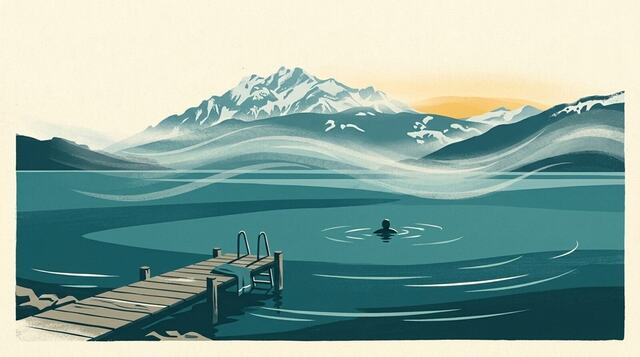
Bagno invernale nel lago di Zugo: la temperatura dell’acqua da dicembre a marzo
Temperatura media dell’acqua del lago di Zugo da dicembre a marzo (Alplakes, 2023–2025), le saune sul lago e le regole di prudenza del bagno freddo.
-
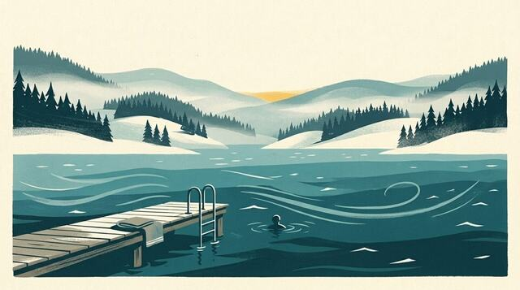
Bagno invernale nel lago di Ägeri: la temperatura dell’acqua da dicembre a marzo
Temperatura media dell’acqua del lago di Ägeri da dicembre a marzo (Alplakes, 2023–2025), le saune sul lago e le regole di prudenza del bagno freddo.
-
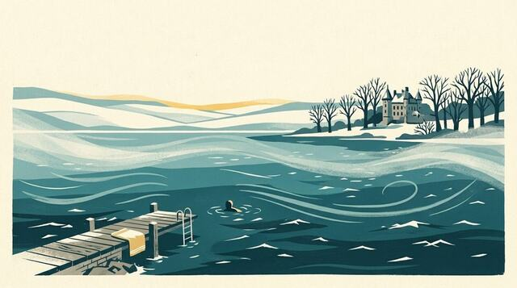
Bagno invernale nel lago di Hallwil: la temperatura dell’acqua da dicembre a marzo
Temperatura media dell’acqua del lago di Hallwil da dicembre a marzo (Alplakes, 2023–2025), le saune sul lago e le regole di prudenza del bagno freddo.
-
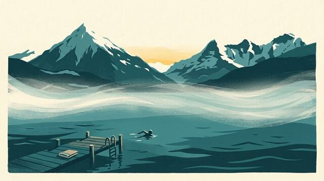
Bagno invernale nel lago di Thun: la temperatura dell’acqua da dicembre a marzo
Temperatura media dell’acqua del lago di Thun da dicembre a marzo (Alplakes, 2023–2025), le saune sul lago e le regole di prudenza del bagno freddo.
-
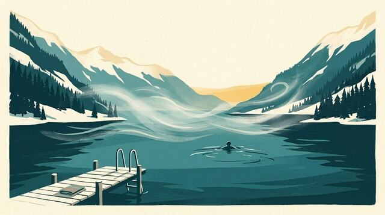
Bagno invernale nel lago di Brienz: la temperatura dell’acqua da dicembre a marzo
Temperatura media dell’acqua del lago di Brienz da dicembre a marzo (Alplakes, 2023–2025), le saune sul lago e le regole di prudenza del bagno freddo.
-
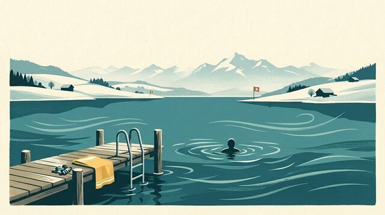
Bagno invernale nel lago di Sempach: la temperatura dell’acqua da dicembre a marzo
Temperatura media dell’acqua del lago di Sempach da dicembre a marzo (Alplakes, 2023–2025), le saune sul lago e le regole di prudenza del bagno freddo.
-
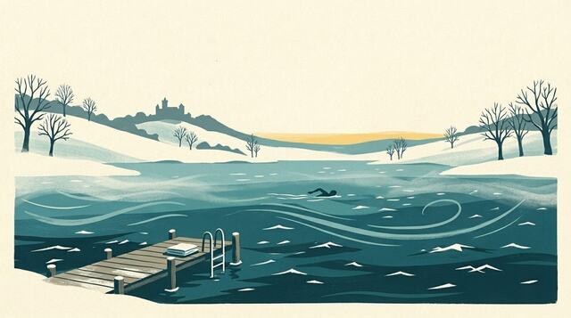
Bagno invernale nel lago di Baldegg: la temperatura dell’acqua da dicembre a marzo
Temperatura media dell’acqua del lago di Baldegg da dicembre a marzo (Alplakes, 2023–2025), le saune sul lago e le regole di prudenza del bagno freddo.
-
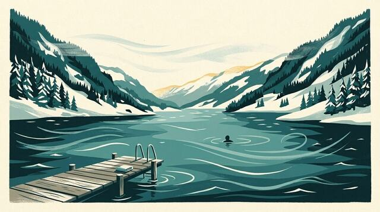
Bagno invernale nel lago di Sarnen: la temperatura dell’acqua da dicembre a marzo
Temperatura media dell’acqua del lago di Sarnen da dicembre a marzo (Alplakes, 2023–2025), le saune sul lago e le regole di prudenza del bagno freddo.
-
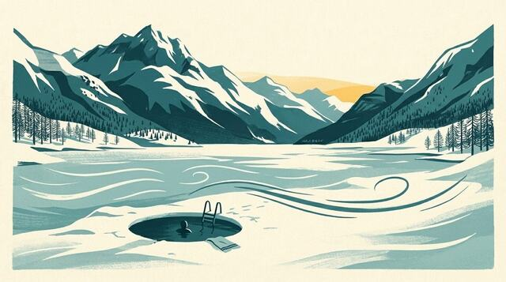
Bagno invernale nel lago di Silvaplana: la temperatura dell’acqua da dicembre a marzo
Temperatura media dell’acqua del lago di Silvaplana da dicembre a marzo (Alplakes, 2023–2025), le saune sul lago e le regole di prudenza del bagno freddo.
-
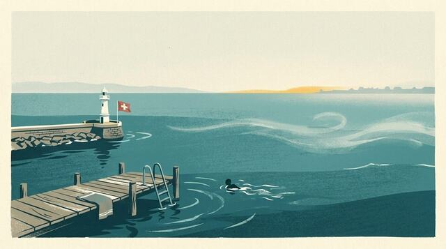
Bagno invernale nel lago di Costanza: la temperatura dell’acqua da dicembre a marzo
Temperatura media dell’acqua del lago di Costanza da dicembre a marzo (Alplakes, 2023–2025), le saune sul lago e le regole di prudenza del bagno freddo.
-
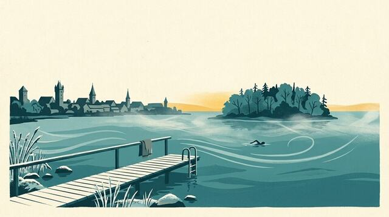
Bagno invernale nel lago di Costanza – Untersee: la temperatura dell’acqua da dicembre a marzo
Temperatura media dell’acqua del lago di Costanza – Untersee da dicembre a marzo (Alplakes, 2023–2025), le saune sul lago e le regole di prudenza del bagno freddo.
-
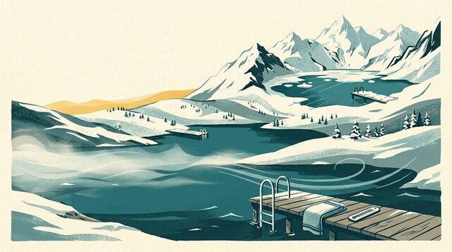
Bagno invernale: i laghi svizzeri con l’acqua meno fredda a gennaio e febbraio
I laghi svizzeri classificati secondo la temperatura media dell’acqua a gennaio e febbraio (modello Alplakes, 2023–2025).
-

Raggiungere la spiaggia con i trasporti pubblici: la fermata più vicina a ogni spiaggia del Lemano
Per ogni spiaggia svizzera del Lemano, il nome della fermata di trasporto pubblico più vicina e la distanza in linea d’aria, dai dati dell’Ufficio federale dei trasporti.
-
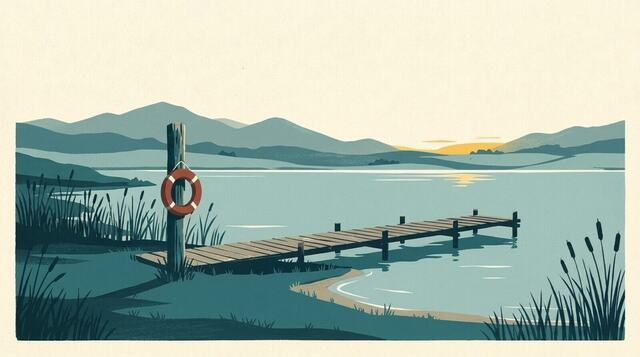
Le sei massime di balneazione della Società Svizzera di Salvataggio
Bambini accompagnati, niente alcol né stomaco pieno o vuoto, niente tuffi dopo il sole, niente tuffi nell’ignoto, niente materassino in acqua profonda, mai soli lontano: le sei massime della SSS.
-
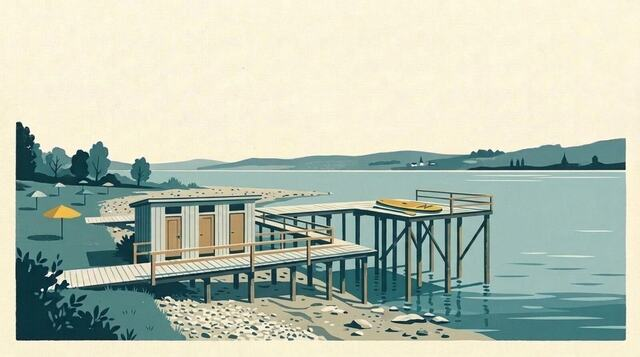
Siccità 2026: 12 laghi svizzeri al livello più basso dal 1970
Dopo l’estate più calda dal 1864, a fine settembre 12 dei 26 grandi laghi svizzeri erano al livello più basso dal 1970, il lago di Zurigo 62 cm sotto il precedente record. L’analisi dell’Eawag.
-
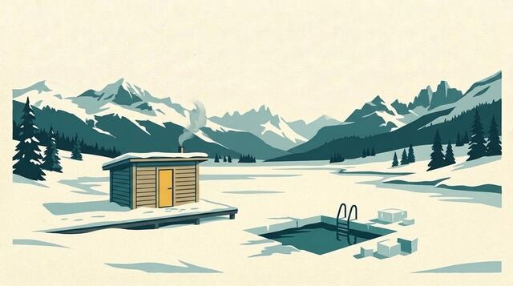
Bagno nel ghiaccio nei Grigioni: le Eisbadi di Arosa, Davos, Sils, St. Moritz e Lumnezia
Dove fare il bagno nell’acqua gelata nei Grigioni: Arosa, Davos, Plaun da Lej sul lago di Sils (da dicembre a Pasqua, 9-17, con sauna), St. Moritz e Davos Munts, e le regole per iniziare.
-
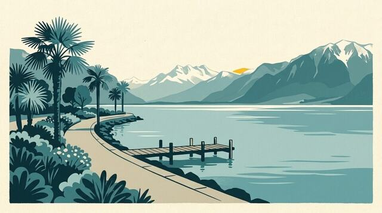
Dove fare il bagno sulla Riviera: le 9 spiagge, da Corseaux a Saint-Gingolph
Da Corseaux a Saint-Gingolph, le 9 spiagge della Riviera con la temperatura dell’acqua del mattino, i luoghi in riva all’acqua e i noleggiatori.
-
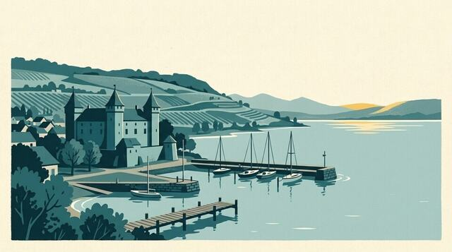
Dove fare il bagno sulla Côte: le 10 spiagge, da Coppet a Buchillon
Tra Mies e Buchillon, le 10 spiagge della Côte con la temperatura dell’acqua del mattino, i luoghi in riva all’acqua e i noleggiatori.
-

Dove fare il bagno a Losanna e Morges: le 10 spiagge, da Ouchy a Saint-Prex
Le 10 spiagge tra Saint-Prex e Paudex, con la temperatura dell’acqua del mattino, gli indirizzi dove bere qualcosa e i noleggiatori.
-
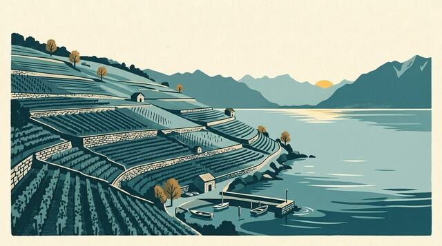
Dove fare il bagno a Lavaux: da Lutry a Saint-Saphorin, tra vigne e lago
Lutry, Villette, Cully, Rivaz e Saint-Saphorin: le spiagge di Lavaux, i vigneti a terrazze patrimonio UNESCO, con la temperatura dell’acqua del mattino.
-
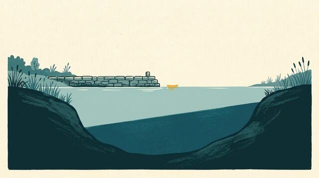
Calo improvviso della temperatura dell’acqua: le sesse interne del Lemano
In estate il lago ha due strati, e il vento può far inclinare il confine tra loro. Cosa dice Wikipedia sulle sesse interne del Lemano e cosa può spiegare a riva.
-
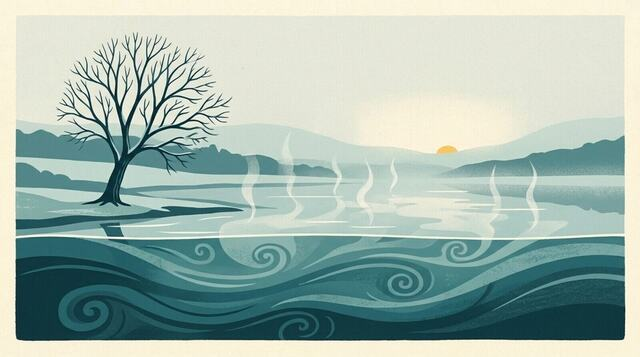
Il rimescolamento del lago: perché gli inverni freddi contano per il Lemano
A fine anno le acque del lago possono mescolarsi. Cos’è il rimescolamento, perché servono inverni molto freddi e cosa accadde nel 2017, secondo Wikipedia e la CIPEL.
-

Termoclino e stratificazione: perché la superficie del lago è più calda
Con il caldo un lago forma tre strati: uno caldo in superficie, una zona di transizione, uno freddo in profondità. Cosa sono epilimnio, termoclino e ipolimnio.
-
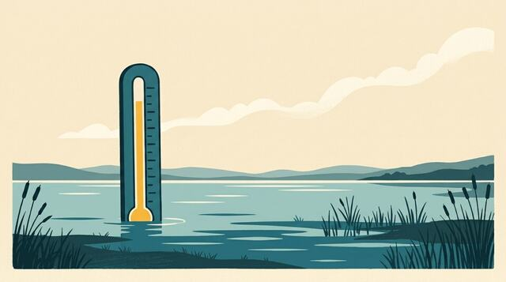
Il Lemano si scalda: +2 °C in superficie in 46 anni
La temperatura media delle acque di superficie del Lemano è passata da 10,9 °C nel 1970 a 12,9 °C nel 2016. Cosa cambia per il lago, secondo Wikipedia.
-

Il favonio in Svizzera: un vento caldo e secco da sud
Da dove viene il foehn, perché è secco e caldo, di quanto riscalda l’aria, e l’episodio del novembre 1982 a Zurigo, secondo Wikipedia.
-

Il livello del Lemano: chi lo regola, tra quali quote
Dal 1884 il livello del Lemano è regolato tra 371,7 e 372,3 metri. Prima variava di 1,54 m tra estate e inverno. Le quote dell’accordo del 1984, secondo Wikipedia.
-

Le sesse del Lemano: quando il lago dondola
Una sessa è un’onda stazionaria del lago: il livello sale da un lato mentre scende dall’altro. Periodo, altezza, chi l’ha studiata, secondo Wikipedia.
-

Il microclima del Lemano: come il lago addolcisce l’inverno e rinfresca l’estate
Con la massa d’acqua che contiene, il Lemano crea un microclima intorno a sé. Cosa dice Wikipedia dei suoi effetti, da Montreux alla bise.
-

I venti del Lemano: bise, vaudaire, joran e séchard
Quattro venti fanno il Lemano: la bise, la vaudaire, il joran e il séchard. Da dove soffiano, con quale forza, quando, e cosa fanno all’acqua, secondo Wikipedia.
-
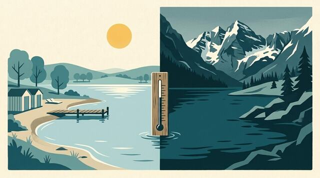
Temperatura dei laghi svizzeri oggi: la classifica del mattino
La classifica del mattino dei laghi seguiti da Il mio lago, dal modello Alplakes dell’Eawag, aggiornata ogni giorno, e come leggere le differenze.
-

Benefici del bagno freddo: cosa dicono gli studi e cosa no
Sonno, qualità della vita, umore, raffreddori, circolazione: cosa dicono una meta-analisi del 2025 e una revisione di riferimento sull’acqua fredda, cosa scrive un’assicurazione svizzera e per chi è sconsigliato.
-

Respirare in acqua fredda: gestire il riflesso di respiro all’ingresso
Il riflesso di respiro, l’iperventilazione incontrollabile, il panico: cosa descrivono la Outdoor Swimming Society, Helsana e una revisione di riferimento, e come entrare per lasciar calmare il respiro.
-
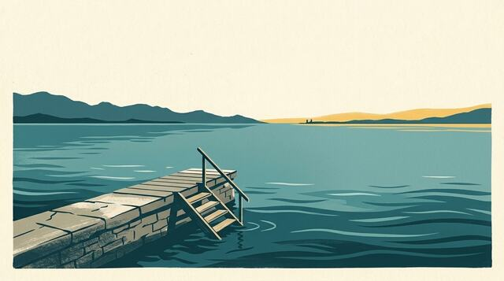
Programma di 4 settimane per iniziare il bagno invernale, passo dopo passo
Quattro settimane per passare da qualche secondo a qualche minuto in acqua fredda, con la regola della Società Svizzera di Salvataggio come tetto. Una proposta di Il mio lago, non un protocollo medico.
-
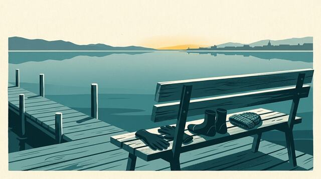
Neoprene per il bagno invernale: muta, guanti, scarpette e cosa cambiano
Cosa fa una muta in acqua fredda, quale spessore per quale temperatura secondo la RLSS, perché non impedisce né lo shock da freddo né l’ipotermia, e i guanti e le calze di cui parla Helsana.
-

Bagno invernale in gruppo in Svizzera: corsi, workshop e ritrovi per iniziare
Eisbadi di Arosa, corsi a Davos e St. Moritz, Seebad Utoquai a Zurigo, Pâquis a Ginevra: dove si può imparare il bagno invernale con altri, e perché è meglio non andare da soli.
-
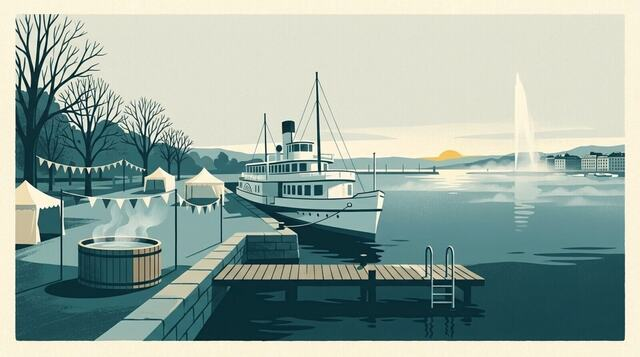
Coupe de Noël 2026 a Ginevra: date, percorso, iscrizioni e consigli
La 88ª Coupe de Noël si nuota il 19 e 20 dicembre 2026 nella rada di Ginevra: 100 m lungo il Jardin Anglais. Programma, categorie, prezzo, accesso, spogliatoi e preparazione, secondo il sito ufficiale.
-
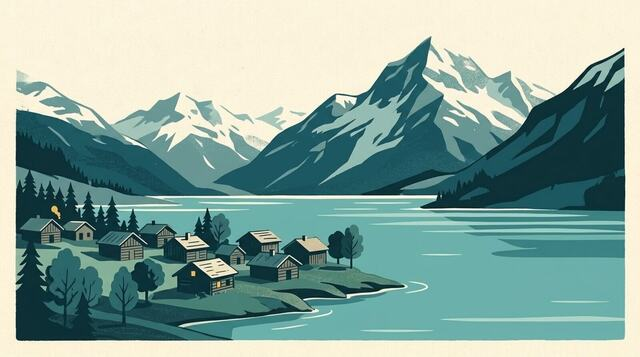
Temperatura dell’acqua del lago di Brienz oggi: da dove viene il dato
La temperatura dell’acqua del lago di Brienz a 70 cm sotto la superficie, per le 4 spiagge seguite, aggiornata ogni tre ore. Da dove viene il dato e che cosa non dice.
-

Dove fare il bagno nel lago di Baldegg: le 2 spiagge, con l’acqua del mattino
Le 2 spiagge seguite del lago di Baldegg: elenco completo con la temperatura dell’acqua del mattino, dove mangiare e bere, dove noleggiare una barca o un paddle.
-

Dove fare il bagno nel lago di Costanza – Untersee: le 4 spiagge, con l’acqua del mattino
Le 4 spiagge seguite del lago di Costanza – Untersee: elenco completo con la temperatura dell’acqua del mattino, dove mangiare e bere, dove noleggiare una barca o un paddle.
-

Temperatura dell’acqua del lago di Morat oggi, spiaggia per spiaggia
La temperatura dell’acqua del lago di Morat a 70 cm sotto la superficie, davanti a ciascuna delle 4 spiagge seguite, aggiornata ogni tre ore. Da dove viene il dato e che cosa non dice.
-
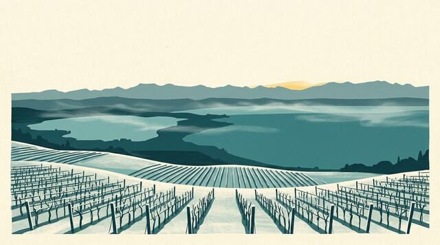
Bagno invernale nei laghi di Neuchâtel, Bienne e Morat: spiagge e saune
Bagno invernale nei laghi di Neuchâtel, Bienne e Morat: la regola di durata della SSS, l’acqua del giorno spiaggia per spiaggia, le spiagge seguite e le saune in riva all’acqua.
-

Dove fare il bagno nel lago di Sempach: le 4 spiagge, con l’acqua del mattino
Le 4 spiagge seguite del lago di Sempach: elenco completo con la temperatura dell’acqua del mattino, dove mangiare e bere, dove noleggiare una barca o un paddle.
-

Afterdrop: perché si ha ancora più freddo dopo un bagno invernale e come scaldarsi
Perché il corpo continua a raffreddarsi per una decina di minuti dopo l’uscita dall’acqua, come cambiarsi, cosa bere e cosa è meglio evitare, come la doccia calda.
-

Temperatura dell’acqua del lago dei Quattro Cantoni oggi, spiaggia per spiaggia
La temperatura dell’acqua del lago dei Quattro Cantoni a 70 cm sotto la superficie, davanti a ciascuna delle 18 spiagge seguite, aggiornata ogni tre ore. Da dove viene il dato e che cosa non dice.
-

Dove fare il bagno nel Lac des Brenets: la spiaggia, con l’acqua del mattino
La spiaggia seguita del Lac des Brenets: elenco completo con la temperatura dell’acqua del mattino, dove mangiare e bere, dove noleggiare una barca o un paddle.
-

Dove fare il bagno nel lago di Silvaplana: la spiaggia, con l’acqua del mattino
La spiaggia seguita del lago di Silvaplana: elenco completo con la temperatura dell’acqua del mattino, dove mangiare e bere, dove noleggiare una barca o un paddle.
-

Qualità dell’acqua di balneazione nel Lemano: come sapere se si può fare il bagno
Chi analizza l’acqua delle spiagge del Lemano, come leggere le classificazioni e perché un’analisi di agosto non dice nulla sull’acqua di novembre.
-

Temperatura dell’acqua del lago Maggiore oggi: da dove viene il dato
La temperatura dell’acqua del lago Maggiore a 70 cm sotto la superficie, per le 7 spiagge seguite, aggiornata ogni tre ore. Da dove viene il dato e che cosa non dice.
-

Dove fare il bagno nel lago di Sarnen: le 2 spiagge, con l’acqua del mattino
Le 2 spiagge seguite del lago di Sarnen: elenco completo con la temperatura dell’acqua del mattino, dove mangiare e bere, dove noleggiare una barca o un paddle.
-
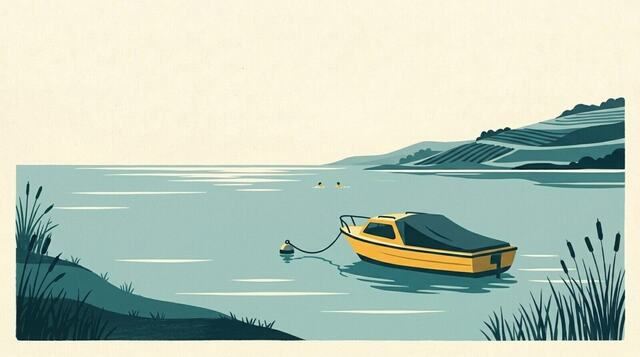
Wakeboard, wakesurf e sci nautico sul Lemano: le scuole e i club
Da Pregny a Thonon, le scuole e i club che escono in barca per wakeboard, wakesurf e sci nautico, e perché serve un lago liscio.
-

Saune galleggianti e barche-sauna in Svizzera: 6 indirizzi su quattro laghi
Barche-sauna e zattere-sauna su Lemano, lago di Bienne, lago di Zurigo e lago dei Quattro Cantoni: 6 indirizzi con punto di partenza e sito di prenotazione.
-
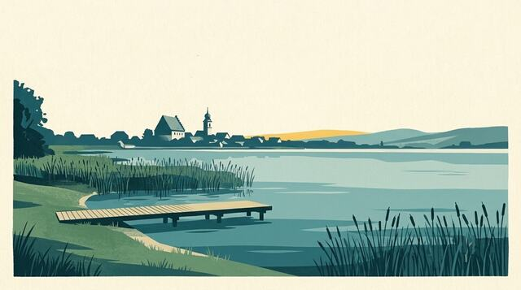
Dove fare il bagno nel Greifensee: le 3 spiagge, con l’acqua del mattino
Le 3 spiagge seguite del Greifensee: elenco completo con la temperatura dell’acqua del mattino, dove mangiare e bere, dove noleggiare una barca o un paddle.
-

Spiagge del Lemano sul lato francese: da Évian a Chens-sur-Léman
Le spiagge della riva francese del Lemano, da Meillerie a Chens-sur-Léman, con la temperatura dell’acqua del giorno, i ristoranti e le scuole di wake nei dintorni.
-

Temperatura dell’acqua del Lac de Joux oggi, spiaggia per spiaggia
La temperatura dell’acqua del Lac de Joux a 70 cm sotto la superficie, davanti a ciascuna delle 2 spiagge seguite, aggiornata ogni tre ore. Da dove viene il dato e che cosa non dice.
-

Dove fare il bagno nel lago di Ägeri: la spiaggia, con l’acqua del mattino
La spiaggia seguita del lago di Ägeri: elenco completo con la temperatura dell’acqua del mattino, dove mangiare e bere, dove noleggiare una barca o un paddle.
-

Dove fare il bagno al Domaine des Îles (Sion): la spiaggia, con l’acqua del mattino
La spiaggia seguita del Domaine des Îles (Sion): elenco completo con la temperatura dell’acqua del mattino, dove mangiare e bere, dove noleggiare una barca o un paddle.
-

Temperatura del Lemano: da dove vengono i numeri e perché variano
Come viene calcolata l’acqua del Lemano a 70 cm davanti a ogni spiaggia, perché può perdere diversi gradi in due giorni e dove consultarla in diretta.
-

Temperatura dell’acqua del lago di Costanza oggi: da dove viene il dato
La temperatura dell’acqua del lago di Costanza a 70 cm sotto la superficie, per le 12 spiagge seguite, aggiornata ogni tre ore. Da dove viene il dato e che cosa non dice.
-

Dove fare il bagno nel lago di Hallwil: le 4 spiagge, con l’acqua del mattino
Le 4 spiagge seguite del lago di Hallwil: elenco completo con la temperatura dell’acqua del mattino, dove mangiare e bere, dove noleggiare una barca o un paddle.
-

Attrezzatura per il bagno invernale: la lista completa prima di andare al Lemano
Cuffia, scarpette e guanti in neoprene, boa da nuoto, tappetino per cambiarsi, mantella e thermos: tutto ciò che serve per un bagno invernale nel Lemano, e perché.
-

Saune sul lago di Zurigo: 5 indirizzi, dalla città a Rapperswil
Le 5 saune del lago di Zurigo seguite da Il mio lago: la sauna del Seebad Enge, la Seesauna di Stäfa e le barche-sauna. Luogo, stagione e link a ogni sito.
-

Dove fare il bagno nel Lac de Bret: la spiaggia, con l’acqua del mattino
La spiaggia seguita del Lac de Bret: elenco completo con la temperatura dell’acqua del mattino, dove mangiare e bere, dove noleggiare una barca o un paddle.
-

Dove fare il bagno nel lago di Brienz: le 4 spiagge, con l’acqua del mattino
Le 4 spiagge seguite del lago di Brienz: elenco completo con la temperatura dell’acqua del mattino, dove mangiare e bere, dove noleggiare una barca o un paddle.
-
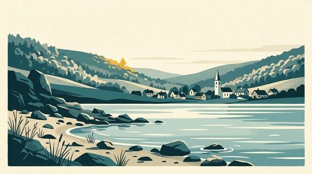
Temperatura dell’acqua del lago della Gruyère oggi: da dove viene il dato
La temperatura dell’acqua del lago della Gruyère a 70 cm sotto la superficie, per le 5 spiagge seguite, aggiornata ogni tre ore. Da dove viene il dato e che cosa non dice.
-

Dove fare il bagno nel lago della Gruyère: le 5 spiagge, con l’acqua del mattino
Le 5 spiagge seguite del lago della Gruyère: elenco completo con la temperatura dell’acqua del mattino, dove mangiare e bere, dove noleggiare una barca o un paddle.
-

Dove fare il bagno nel lago di Zugo: le 15 spiagge, con l’acqua del mattino
Le 15 spiagge seguite del lago di Zugo: elenco completo con la temperatura dell’acqua del mattino, dove mangiare e bere, dove noleggiare una barca o un paddle.
-

Kitesurf, windsurf e wingfoil sul Lemano: il vento giusto e i posti giusti
Quale forza del vento per kitesurf, windsurf e foil sul Lemano, perché la bise fa i migliori downwind e dove noleggiare o imparare.
-

Temperatura dell’acqua del lago di Thun oggi: da dove viene il dato
La temperatura dell’acqua del lago di Thun a 70 cm sotto la superficie, per le 8 spiagge seguite, aggiornata ogni tre ore. Da dove viene il dato e che cosa non dice.
-
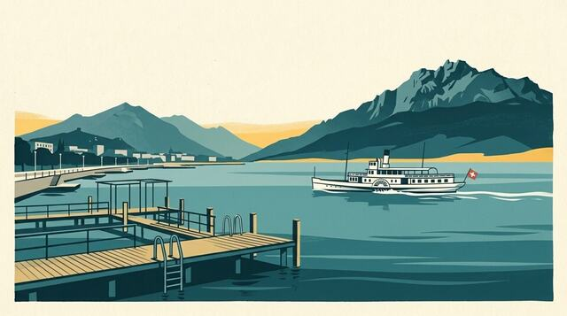
Dove fare il bagno nel lago dei Quattro Cantoni: le 18 spiagge, con l’acqua del mattino
Le 18 spiagge seguite del lago dei Quattro Cantoni: elenco completo con la temperatura dell’acqua del mattino, dove mangiare e bere, dove noleggiare una barca o un paddle.
-

Dove fare il bagno a Ginevra: le spiagge del cantone, una per una
Dai Bains des Pâquis a Hermance: le spiagge ginevrine del Lemano con i loro chioschi e la temperatura dell’acqua del giorno per ciascuna.
-

Bagno invernale a Zurigo: spiagge del lago, acqua del giorno e saune
Bagno invernale nel lago di Zurigo e nel Greifensee: la regola di durata della SSS, l’acqua del giorno spiaggia per spiaggia, le spiagge seguite e le saune in riva al lago.
-

Dove fare il bagno nel lago di Morat: le 4 spiagge, con l’acqua del mattino
Le 4 spiagge seguite del lago di Morat: elenco completo con la temperatura dell’acqua del mattino, dove mangiare e bere, dove noleggiare una barca o un paddle.
-
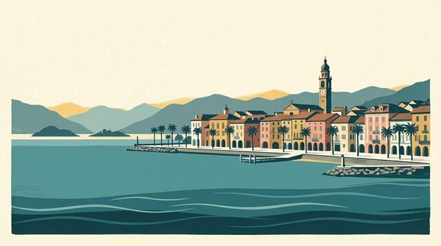
Spiagge del lago Maggiore: accesso, dove mangiare e dove noleggiare una barca
Le 7 spiagge seguite del lago Maggiore: come arrivarci, dove mangiare e bere, dove noleggiare una barca o un paddle. La temperatura dell’acqua ha un articolo a parte.
-

Paddle sul Lemano: quando il lago è abbastanza calmo e dove noleggiare
Da quale vento il paddle diventa difficile sul Lemano, come leggere le raffiche e i noleggi di paddle da Ginevra a Saint-Gingolph.
-
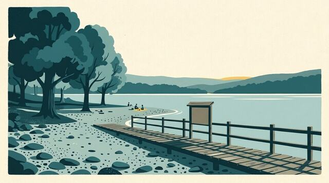
Temperatura dell’acqua del lago di Bienne oggi, spiaggia per spiaggia
La temperatura dell’acqua del lago di Bienne a 70 cm sotto la superficie, davanti a ciascuna delle 7 spiagge seguite, aggiornata ogni tre ore. Da dove viene il dato e che cosa non dice.
-
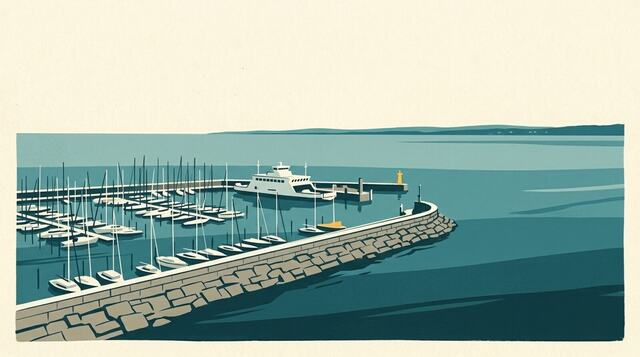
Dove fare il bagno nel lago di Costanza: le 12 spiagge, con l’acqua del mattino
Le 12 spiagge seguite del lago di Costanza: elenco completo con la temperatura dell’acqua del mattino, dove mangiare e bere, dove noleggiare una barca o un paddle.
-

Bagno invernale nel Lemano: iniziare bene a Ginevra e a Losanna
Quanto restare in acqua, come entrare, dove fare il bagno e scaldarsi a Ginevra e a Losanna: la guida al bagno invernale nel Lemano, con l’acqua del giorno spiaggia per spiaggia.
-
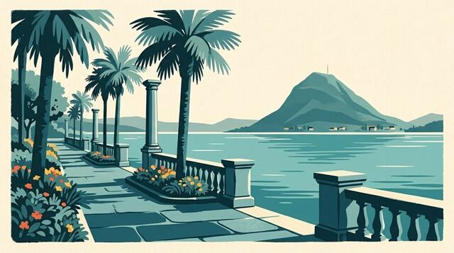
Temperatura dell’acqua del lago di Lugano oggi, spiaggia per spiaggia
La temperatura dell’acqua del lago di Lugano a 70 cm sotto la superficie, davanti a ciascuna delle 14 spiagge seguite, aggiornata ogni tre ore. Da dove viene il dato e che cosa non dice.
-
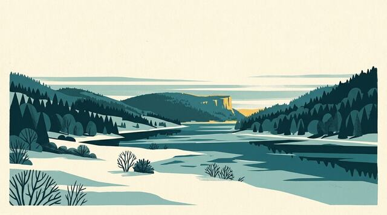
Spiagge del Lac de Joux: accesso, dove mangiare e dove noleggiare una barca
Le 2 spiagge seguite del Lac de Joux: come arrivarci, dove mangiare e bere, dove noleggiare una barca o un paddle. La temperatura dell’acqua ha un articolo a parte.
-
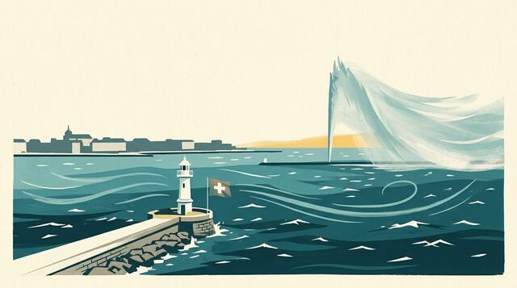
La bise sul Lemano: cosa cambia per balneazione, paddle e kite
Da dove viene la bise, come riconoscerla e da quando disturba balneazione e paddle, mentre kitesurfisti, windsurfisti e foiler la aspettano.
-

Temperatura dell’acqua del lago di Zurigo oggi, spiaggia per spiaggia
La temperatura dell’acqua del lago di Zurigo a 70 cm sotto la superficie, davanti a ciascuna delle 20 spiagge seguite, aggiornata ogni tre ore. Da dove viene il dato e che cosa non dice.
-

Dove fare il bagno nel lago di Bienne: le 7 spiagge, con l’acqua del mattino
Le 7 spiagge seguite del lago di Bienne: elenco completo con la temperatura dell’acqua del mattino, dove mangiare e bere, dove noleggiare una barca o un paddle.
-
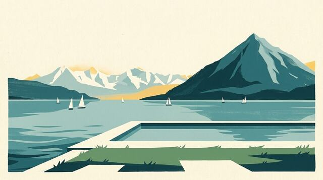
Dove fare il bagno nel lago di Thun: le 8 spiagge, con l’acqua del mattino
Le 8 spiagge seguite del lago di Thun: elenco completo con la temperatura dell’acqua del mattino, dove mangiare e bere, dove noleggiare una barca o un paddle.
-
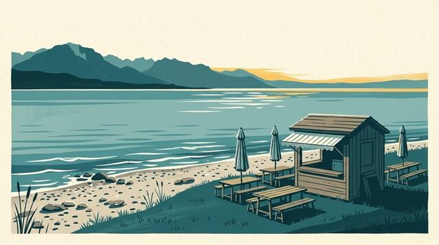
Chioschi e ristoranti in riva al Lemano: i nostri indirizzi con i piedi nell’acqua
Le terrazze in riva all’acqua di Ginevra, La Côte, Losanna, la Riviera e la riva francese, con le loro stagioni di apertura.
-

Saune in riva al Lemano: i 11 indirizzi, da Ginevra a Vevey
Le 11 saune in riva al Lemano seguite da Il mio lago: iurte, botti, una barca-sauna, bagni storici. Stagione, luogo e link al sito di ciascuna.
-

Dove fare il bagno nel lago di Lugano: le 14 spiagge, con l’acqua del mattino
Le 14 spiagge seguite del lago di Lugano: elenco completo con la temperatura dell’acqua del mattino, dove mangiare e bere, dove noleggiare una barca o un paddle.
-
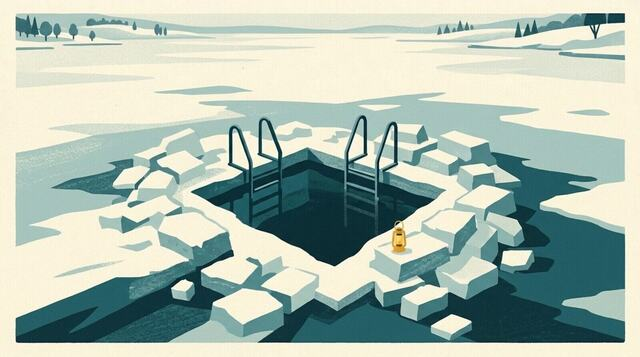
Shock da freddo: i primi 90 secondi nell’acqua fredda del Lemano
Cosa fa il corpo entrando in acqua a 10 °C, perché non bisogna tuffarsi, come respirare nel primo minuto e perché andare dal medico prima di cominciare.
-

Temperatura dell’acqua del lago di Neuchâtel oggi, spiaggia per spiaggia
La temperatura dell’acqua del lago di Neuchâtel a 70 cm sotto la superficie, davanti a ciascuna delle 15 spiagge seguite, aggiornata ogni tre ore. Da dove viene il dato e che cosa non dice.
-
Dove fare il bagno nel lago di Neuchâtel: le 15 spiagge, con l’acqua del mattino
Le 15 spiagge seguite del lago di Neuchâtel: elenco completo con la temperatura dell’acqua del mattino, dove mangiare e bere, dove noleggiare una barca o un paddle.
-

Dove fare il bagno nel lago di Zurigo: le 20 spiagge, con l’acqua del mattino
Le 20 spiagge seguite del lago di Zurigo: elenco completo con la temperatura dell’acqua del mattino, dove mangiare e bere, dove noleggiare una barca o un paddle.